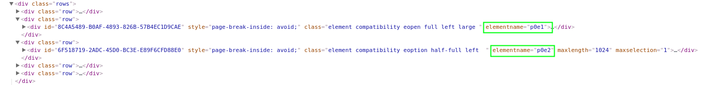

answerData option with SurveypalButton
// Build options for the library
var options = {
sid: "498195491",
key: "-N-gHPW21l3Gtol9svg_r-D9jeNtcjCPETkyq8lsoSjRlltDQQhHgRZDHjrJcjIM",
location: "left low",
cssname: "surveypal-button-1.0.1.css",
type: "slide",
answerData: {
"p0e1": "Predefined text from answerData option",
"p0e2": 0,
"p0e3": 2,
"p0e4": 4
}
};
// Fetch library from Surveypal cdn
(function(w, t, o) {
var s='script',ns='sb',e,n;
var h="https://b0817826f4686949b611-7139975ebb420828147d923433383bf8.ssl.cf3.rackcdn.com/";
e=t.createElement(s);e.async=1; e.src=h+'surveypal-button-1.0.1.js';
w[ns]=w[ns]||{};w[ns].o=o;w[ns].h=h;
n=t.getElementsByTagName(s)[0];n.parentNode.insertBefore(e,n);
})(window,document, options);
In the example keys p0e1, p0e2, p0e3 and p0e4 represent questions in the survey.
The values 0, 2, 4 and "Predefined text from answerData option" are answers passed to those questions.
You can see how it works by clicking the button on the lower left corner of the screen.
The data passed can be updated any time by using the window.sb.option() e.g. window.sb.option("answerData", {"p0e1": "New answer data is here"})
There can be two kind of values passed to the answer: numeric indexes and string values. Indexes are integers that tell which option is selected for a question. First option has index 0, second 1, third 2 etc. Indexes work with
String values work with open questions.
The key defines the element for which the value is passed to. In p0e1 part p0 signifies page number (starting from 0). Since the
feature currently supports only passing data to first page, the first part has to be p0 every time.
Part e1 tells the element index (starting from 0).
All the elements on the page, even static ones, must be taken into account when finding out what index an element has. In the the example, the static
text on the top of the page has element index 0, open question has 1, single choice 2, and so on.
NB! Invalid element identifiers, or identifiers belonging to another survey page, will cause the survey not to load.
Element identifier can also be checked from the DOM directly. It is the attribute called "elementname":
{kind=link}